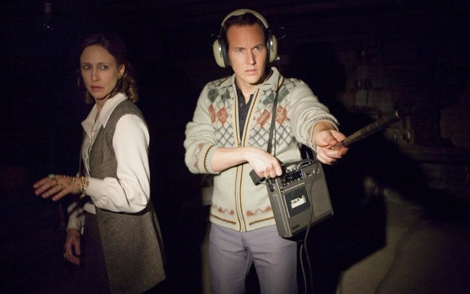
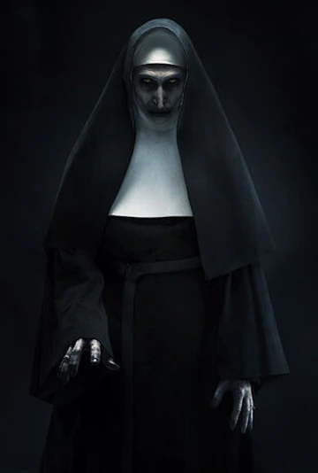

| Nombre |
Imagen |
Descripción |
| Mullins |
 |
Mullins es una niña que se convierte en el foco de una maldición en la pelicula Anabelle: Creation(2017).
En la pelicula nos cuentan como la tragedia y el dolor de sus padres, la llevan a la creación de la muñeca Annabelle, que se convierte en uno de los objetos más terrorificos.
Dentro del pasaje será el primer personaje que encontremos, con un gran impacto para iniciar de una manera escalofriante nuestro recorrido. |
| Higgins |
 |
Annabelle Higgins es un personaje de la película Annabelle (2014), que forma parte del universo de El Conjuro. Es una joven mujer que pertenece a la secta satánica Los Discípulos del Carnero y es responsable de la maldición de la muñeca Annabelle.
Es una mujer pálida, con el cabello oscuro y largo, generalmente vestida con un camisón blanco ensangrentado. Su rostro suele verse desfigurado o cubierto de sangre en las escenas más aterradoras.
|
| Ed y Lorrain |
 |
Ed y Lorraine Warren son una legendaria pareja de investigadores paranormales en el universo de Expediente Warren (The Conjuring Universe), dedicados a enfrentar fuerzas demoníacas y ayudar a familias atormentadas por entidades sobrenaturales.
Interpretados por Patrick Wilson y Vera Farmiga, su historia está inspirada en los verdaderos Warren, quienes documentaron algunos de los casos paranormales más famosos de la historia. |
| Caroline |
 |
Es uno de los personajes principales en la película y la madre de cinco hijas, incluida April, quien juega un papel importante en la historia. La familia se muda a una casa aislada en Rhode Island en 1971, sin saber que está siendo acosada por fuerzas paranormales. |
| Bathseeba |
|
Según la película, era una mujer del siglo XIX acusada de brujería y de sacrificar a su hijo en honor a Satanás. Su espíritu maligno atormenta a la familia Perron en su casa en Harrisville, Rhode Island, mostrando una presencia aterradora y violenta. |
| Valak |
 |
Valak es la entidad demoníaca principal en El Conjuro 2 y La Monja. Se manifiesta como una monja de apariencia terrorífica, con piel pálida, ojos amarillos y un hábito oscuro. Es un demonio de alto rango que busca sembrar el miedo y la desesperación, desafiando la fe de quienes intentan enfrentarlo. Su presencia es especialmente aterradora debido a su habilidad para manipular la realidad y poseer a sus víctimas. Aunque basado en un demonio de la demonología real, su representación en la franquicia El Conjuro es una creación ficticia para aumentar el terror. |
| Novia |
 |
Es una entidad fantasmal vinculada a un vestido de novia poseído, que obliga a quienes lo usan a cometer asesinatos. Su historia sugiere que una novia asesinó a su prometido y quedó atrapada en el vestido, maldiciéndolo. En la película, su presencia es aterradora, ya que acecha y posee a quienes se acercan al vestido, buscando nuevas víctimas para continuar su macabro legado. |
| Isla |
 |
Es la líder de un culto satánico que practica magia oscura y rituales de invocación demoníaca. Su presencia está vinculada a los artefactos malditos en la colección de los Warren, ya que sus prácticas dejaron una huella de maldad en varios objetos. Aunque no es un espíritu en sí, su influencia persiste a través de los elementos ocultistas que dejó atrás, provocando fenómenos paranormales y desatando fuerzas malignas. |